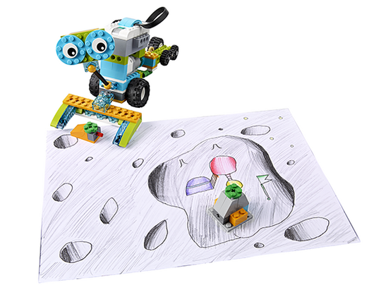
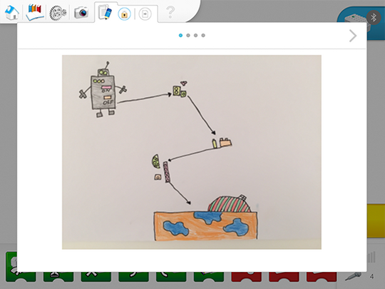

Preguntas para debatir en grupo
-
¿Cómo podemos enviar cosas a la Luna?
Pueden enviarse cosas a la Luna o a otros lugares en cohetes.
-
¿Cómo pueden aterrizar las cosas en la Luna?
Ya se han inventado diferentes métodos para hacer aterrizar paquetes de forma segura, como los paracaídas, los globos o los cohetes. La atmósfera de la Luna es muy fina, así que los paracaídas no son una buena solución. Tradicionalmente se han usado cohetes.
-
¿Cuál es una buena manera de crear y construir una base en la Luna?
Los robots suelen usarse para tareas que son demasiado peligrosas para que las lleve a cabo un ser humano.
El texto destacado en verde sugiere un lugar en el que los estudiantes deberían documentar su trabajo.
Creación del ambiente para este proyecto
Este proyecto requiere una superficie lisa como una mesa o el suelo. Asegúrese de definir estas posiciones para sus estudiantes:
-
Posición inicial del robot
-
Posición del primer módulo
-
Posición del segundo módulo
-
Posición de montaje de la base lunar
Las posiciones exactas no son importantes, pero seguramente se percatará de que algunas configuraciones son más sencillas que otras. Cuantos más giros tenga que dar el robot, más difícil será completar la tarea. Puede hacer que cada equipo utilice las mismas posiciones o que usen otras diferentes.

Conseguir que los estudiantes simplifiquen el problema (descomposición)
La descomposición es la habilidad principal que debe desarrollarse durante esta fase. Por lo tanto, el objetivo es conseguir que los estudiantes descompongan el problema.
En otras palabras:
¿El estudiante es capaz de explicar el problema por sí mismo?
¿El estudiante es capaz de describir cómo evaluará si ha tenido éxito la resolución del problema?
¿El estudiante es capaz de descomponer el problema en partes más pequeñas y manejables?
Desglose sugerido de este problema:
¿Dónde están los objetos que hay que recoger?
¿Adónde tenemos que ir?
¿En qué orden tienen que recogerse y desplazarse?
¿Cuál es el mejor camino para el robot?
Este es un ejemplo de cómo pueden documentar los estudiantes sus ideas usando la herramienta de documentación:

El texto destacado en verde en las páginas del estudiante sugiere un lugar en el que deberían documentar su trabajo.
En la fase Explorar, la información debe reflejar si el estudiante se implica de manera activa en los debates preguntando y respondiendo a preguntas, y su nivel de comprensión del problema.
La información se puede dar en una escala del 1 a 4:
-
El estudiante no es capaz de proporcionar respuestas a las preguntas ni de participar en debates de forma adecuada.
-
El estudiante es capaz, si se le pide, de proporcionar respuestas a las preguntas o participar en debates de forma adecuada.
-
El estudiante es capaz de proporcionar respuestas a las preguntas y de participar en debates en clase de forma adecuada.
-
El estudiante es capaz de ampliar una explicación en los debates de clase.
Puede encontrar rúbricas específicas para evaluar las habilidades de pensamiento computacional en la Guía del profesor.